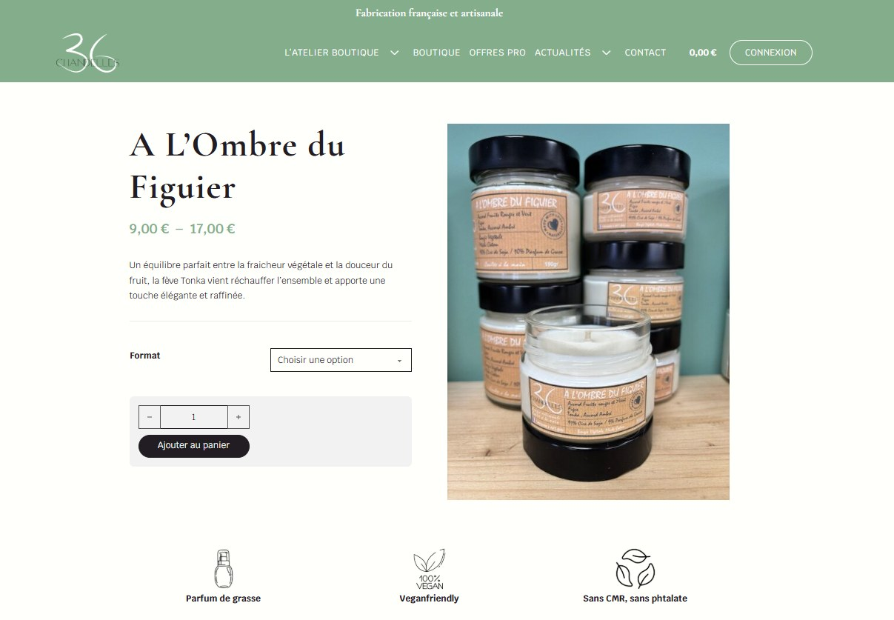
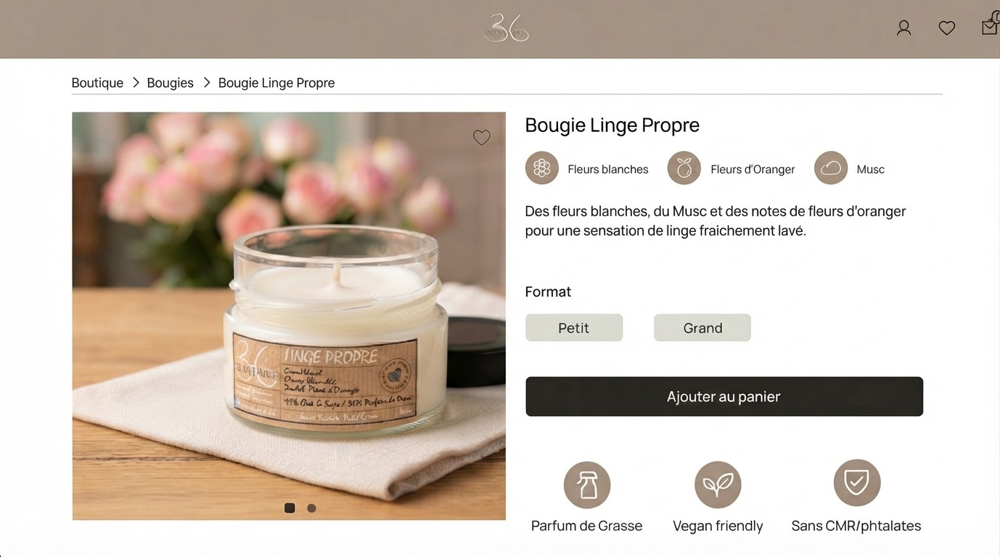

Inès Moumni bridges the gap between business strategy and
human-centric design.
Designing for e-commerce, product, and service experiences
where business goals, user needs, and craft intersect.
Currently building: RetailSignal AI — an LLM-powered sales intelligence tool.
Hi, I'm Inès Moumni!
I'm a product manager with a Master's in International Business and a background in Marketing. Currently studying UX/UI Design at Ironhack (June 2026), I bridge the gap between business strategy and human-centric design. My path is unconventional, and that's my greatest strength: I don't just design interfaces, I build solutions that solve actual business problems.
Having navigated the worlds of data strategy and product management, I thrive in the "discovery to delivery" loop. Whether I'm analyzing market trends or designing an MVP interface, my goal remains the same: creating impact.
Lately, I've been integrating AI and LLM workflows into how I prototype and validate ideas faster. Let's connect on LinkedIn ✦
Experiences
Data Strategy & Insights (Graduate Program) — McCormick
Spring 2025
Digital Project & B2B Partnerships Manager — Planète Mer (NGO)
2023 – 2024
Scrum Master & Consultant — Hopper (school project)
Spring 2023
Education
UX/UI Design Bootcamp — Ironhack (remote)
2026
MSc International Business — TBS Education (Barcelona)
2023
← Back to work
UX Research · E-commerce · Ironhack
Selling Scent Through a Screen: Redesigning 36 Chandelles
How we bridged the sensory gap for an artisanal candle brand.
The Problem
Angèle, the founder of 36 Chandelles, was losing sales daily because her customers couldn't "smell" her products online. It was a business problem wearing a design disguise — she was manually recovering lost sales by messaging customers herself.
Why it mattered
🧑🤝🧑
The customer
Struggles to evaluate scent, causing purchase hesitation.
🏪
The business
Angèle spends hours manually managing sales, limiting her time for production and growth.
✎
The brand
The website fails to reflect the true quality and authenticity of the artisanal products.
The Strategy
We didn't just design; we listened. By combining secondary research with deep-dive user interviews, we mapped out the "sensory gap" that prevented purchases. We reframed the challenge: How might we help users feel confident about scent without smelling it?
Lilia
Marketing coordinator
Needs and wants
- Find an original gift
- Feel confident choosing a scent
- Complete the purchase quickly
Pain points and frustration
- Can't evaluate scent online
- Confused by a scattered price range
- Navigation doesn't guide her
"Candles are always a safe bet — people love receiving them."
The Solution
The redesign focused on three levers: simplifying navigation to reduce friction, integrating trust badges above the fold, and using sensory-evoking language to compensate for the screen's limitations.


Impact and Next Steps
Beyond redesigning screens for computer, we also designed for mobile. As next steps, I recommended two key priorities to drive growth: a format selector for intuitive shopping, and bundle pricing to boost conversion.